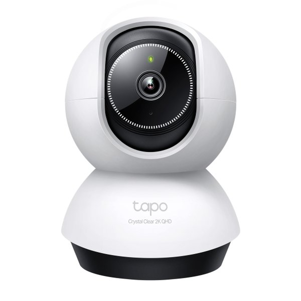

Análisis de cámaras para mascotas
Revisamos cada cámara a fondo: qué ofrece, qué le falta y para quién merece la pena.
En cada análisis revisamos lo que de verdad importa en una cámara para mascotas: si distingue a tu perro o gato del resto de movimientos, cómo se ve de noche, si puedes hablarle a distancia, dónde se guardan las grabaciones y si necesitas pagar una suscripción mensual para usar las funciones principales. Comparamos cada modelo a partir de sus especificaciones oficiales y te decimos para quién es la mejor opción. Así hacemos nuestros análisis.

TP-Link Tapo C220: opiniones y análisis
Detección de mascotas por IA, grabación en microSD sin cuotas y giro de 360° por unos 45 €.
Leer →Las mejores cámaras para vigilar a tu mascota
Tapo C21A, Tapo C220 y Furbo 360° frente a frente: precios, funciones y cuál elegir.
Leer →Pronto añadiremos más artículos. ¿Echas algo en falta? Escríbenos a albertsanchezguiu@gmail.com.